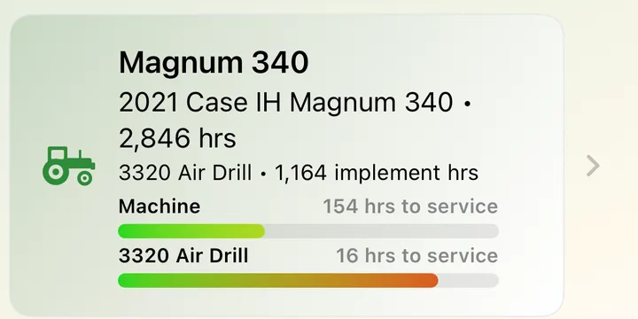
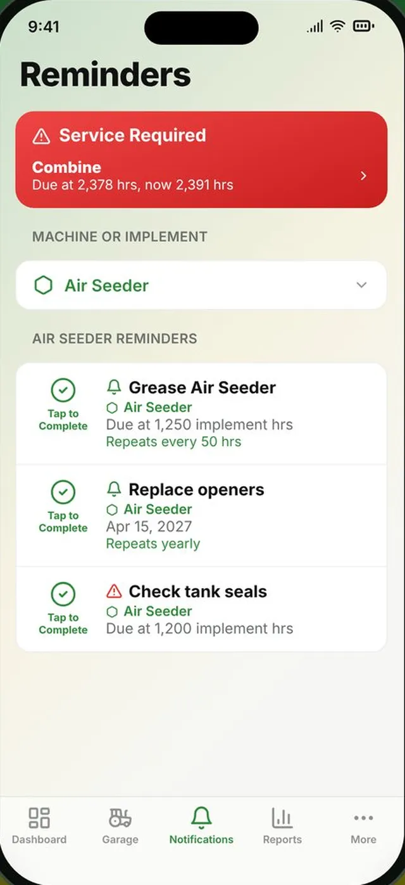

Machines, service & fuel
The Farm screen keeps every machine and implement in one list with its hours and service bars. Behind each one is its service history, reminders, parts, fuel and costs.

Every machine, with its hours and what's due
Add tractors, combines, sprayers, loaders and trucks with their make, model, year, photo and purchase price. Implements are kept separately and move between machines, keeping their own hours, working width and life expectancy.
- Hours and service bars on every card
- See which implement is on which machine
- Implement hours and percent of life remaining
- Working width used for maps and acres

Never miss a service
Give each machine and implement a maintenance interval in hours. When it's due, AgSaver shows Service Required, and Mark Maintenance Done resets the count and opens a service record for the details. Add reminders for anything else, by hours or by date.
- Reminders that repeat every so many hours, or every year
- Notifications when something comes due
- Service records with date, hour reading, cost and notes
- Full service history per machine

Fuel use you can actually trust
Log each fill-up with litres or gallons, price and hour meter reading. AgSaver works out consumption from full tank to full tank, counting partial fills in between, so the L/hr figure stays accurate.
- Litres per hour and fuel cost per acre
- Fuel report by machine and by fill-up
- Add fuel from Apple Watch
- Litres or US gallons

What each machine really costs to run
Record parts, repairs, insurance and other expenses with a photo of the receipt. Keep part numbers for filters and belts on every machine so you have them at the dealer. The total cost of ownership report brings it all together.
- Expenses with receipt photos
- Parts and filters list per machine and implement
- Purchase price included in ownership cost
- Ownership cost broken down into fuel, service and expenses

The paperwork, handled
Quick entry buttons on the dashboard mean the record gets made while you're still at the machine.
Quick fuel entry
Add fuel, service or an expense straight from the dashboard in a couple of taps.
Receipt photos
Snap the receipt and it stays with the expense, and goes into your full export.
Parts at hand
Filter numbers, belts and other parts listed for every machine and implement.
Notifications
Choose which reminders notify you and when.
Service history report
Every service record and its cost, filtered by machine and date.
Life expectancy
Set an implement's expected life in hours and see how much is left.
More of what AgSaver does
Put every hour and every acre to work.
AgSaver runs on iPhone, iPad and Apple Watch. Your records stay on your devices and your own iCloud.
 Scan to download
Scan to download